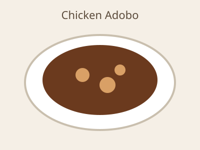

Home
Chicken Adobo

Description
Chicken adobo is often called the unofficial national dish of the Philippines. Chicken is simmered in vinegar, soy sauce, garlic, and peppercorns until tender and glossy.
The flavor is savory, tangy, and a little sweet, and it is best served over steaming white rice. It also tastes even better the next day.
Ingredients
- 1 kg chicken thighs and drumsticks
- 1/2 cup soy sauce
- 1/2 cup white or cane vinegar
- 1 head garlic, crushed
- 3 bay leaves
- 1 tsp whole black peppercorns
- 1 cup water
- 1 tbsp brown sugar (optional)
- 2 tbsp cooking oil
Steps
- Combine chicken, soy sauce, vinegar, garlic, bay leaves, and peppercorns in a bowl and marinate for 30 minutes.
- Heat oil in a pot and brown the chicken pieces on all sides, then set aside.
- Pour the marinade and water into the pot and bring to a boil.
- Return the chicken, cover, and simmer on low heat for 30 to 35 minutes.
- Stir in the brown sugar if using, and simmer uncovered for 10 minutes until the sauce thickens.
- Serve hot over steamed rice.